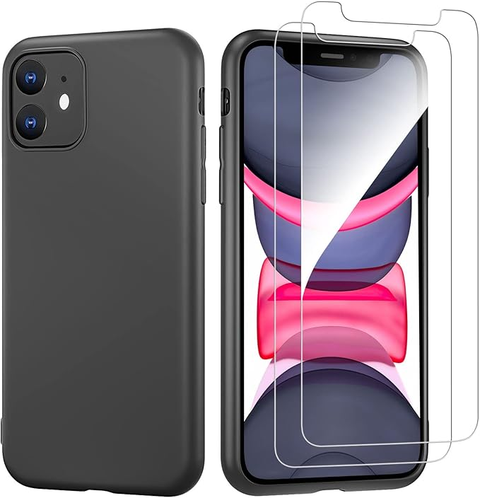
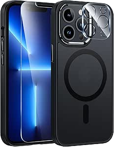
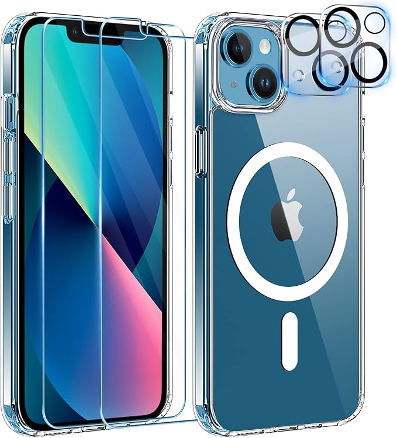
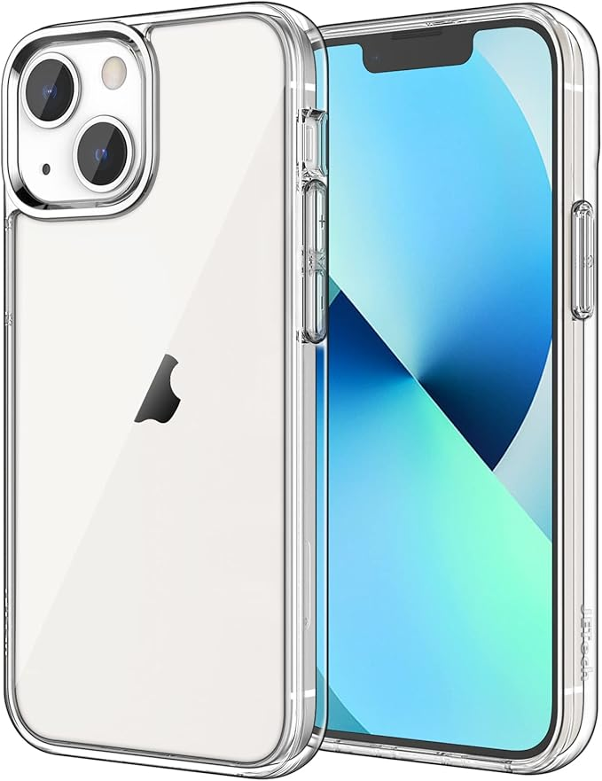
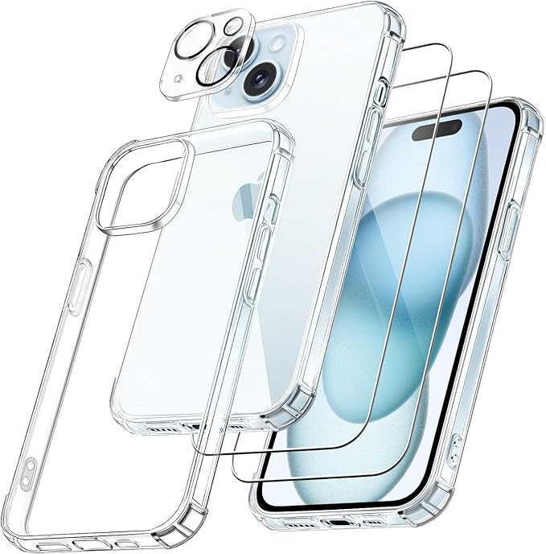
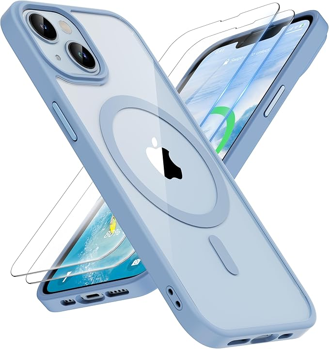

Protéger son iPhone n'a jamais été aussi important. Entre les chutes, les rayures et les chocs du quotidien, une bonne coque est essentielle. Voici notre sélection des 5 meilleures coques de protection pour iPhone en 2025, testées pour leur solidité, leur compatibilité MagSafe, et leur style.
📄 Sommaire
| Modèle |
Compatibilité |
Type de protection |
MagSafe |
| FNTCASE |
iPhone 13/14/16e |
Protection militaire |
Oui |
| YisrLery |
iPhone 13 |
Verres + antichoc |
Oui |
| JETech |
iPhone 13 |
Antichoc / anti-rayures |
Non |
| FLLAO |
iPhone 15 |
Coque + verre trempé |
Non |
| ORETECH |
iPhone 13/14 |
Protection complète |
Oui |
👍 FNTCASE Coque pour iPhone
🌟 Notre meilleur choix : solide, MagSafe et bon prix !

- Compatibilité : iPhone 13/14/16e
- Protection : Certifiée militaire, anti-jaunissement
- Bonus : Compatibilité MagSafe + design anti-choc
🔗 Voir sur Amazon
🧲 YisrLery Coque MagSafe + Verres

- Compatibilité : iPhone 13
- Protection : Coque + 2 verres trempés + 2 lentilles
- Atouts : Design clair + aimantation efficace
🔗 Voir sur Amazon
🎨 JETech Coque Transparente iPhone 13

- Compatibilité : iPhone 13 6,1"
- Protection : Anti-rayures, anti-choc, sans jaunissement
- Style : Design sobre et minimaliste
🔗 Voir sur Amazon
🔧 FLLAO Coque 4-en-1 iPhone 15

- Contenu : Coque + 2 verres trempés + 1 protecteur photo
- Compatibilité : iPhone 15
- Points forts : Protection à 360° et coussins d'air
🔗 Voir sur Amazon
🧱 ORETECH Coque iPhone 13/14

- Protection : Dos anti-rayures + coin renforcés
- Compatibilité : iPhone 13/14
- Avantages : MagSafe compatible + look sobre
🔗 Voir sur Amazon
💡 Conclusion
Choisir une bonne coque pour iPhone, c'est protéger son investissement. Que vous soyez adepte du design Apple, fan de transparence, ou à la recherche de blindage, cette sélection vous assure qualité, durabilité et style. N'oubliez pas de vérifier la compatibilité MagSafe si vous utilisez des accessoires Apple !
📏 Astuce : Vérifiez toujours le modèle exact de votre iPhone (dans Réglages > Informations). Une coque iPhone 13 ne conviendra pas à un 14 ou un 15, même si le design est similaire.
📸 À savoir : Certaines coques épaisses peuvent gêner les capteurs photo ou créer des reflets. Privilégiez une découpe précise autour des objectifs si vous faites beaucoup de photos.
🎁 Bon plan : Certains lots Amazon incluent la coque, des verres trempés et même une protection d’objectif photo. Idéal pour une protection complète à petit prix !
❓ Foire Aux Questions (FAQ)
Quelle coque choisir pour une protection optimale ?
Optez pour des modèles testés contre les chutes (normes militaires) et dotés de renforts aux coins. Certaines coques intègrent aussi un verre trempé ou une protection d’objectif photo pour une couverture complète.
Est-ce que toutes les coques sont compatibles MagSafe ?
Non. Seules certaines coques intègrent un anneau aimanté compatible MagSafe. C’est un vrai plus si vous utilisez un chargeur sans fil ou des accessoires magnétiques Apple.
Les coques transparentes jaunissent-elles avec le temps ?
La plupart finissent par jaunir à cause des UV, mais certaines marques utilisent des matériaux anti-jaunissement. C’est un point à vérifier dans les descriptions produit.
📘 Nos autres comparatifs populaires
🌟 D'autres guides arrivent bientôt ! Revenez régulièrement pour rester à jour sur les meilleurs accessoires tech de 2025.